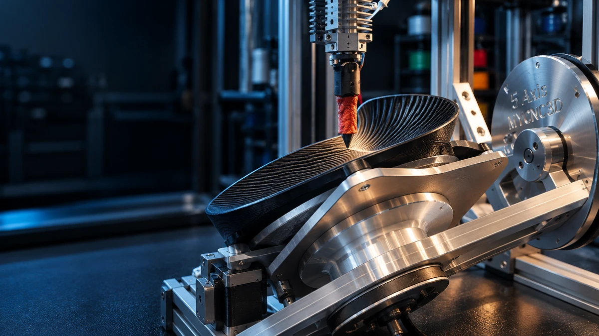

01 / MotionUnder development
Multi-axis motion
We investigate machine architectures and motion strategies capable of controlling material deposition beyond conventional XY layer-by-layer motion.
Research includes machine kinematics, motion coordination, deposition orientation and integration with advanced toolpath generation.
View project →